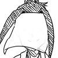

とうらぶコンテンツ メイン夢主

小手毬(こでまり)/藤哉(ふじや):深水千草/なし
初期刀:山姥切国広
初鍛刀:愛染国俊
メタ世界線と創作世界線で設定が変わるが、指定がなければ基本は小手毬に従事する。
「審神者」という職業が正式に発足する前の実験段階である「審神者プロジェクト」の際に、未来に影響のない生贄の気質が強い人間として選定された元一般人。
浄化の力を持っていたのと霊力の量など、様々な幸運により３０人いた中の５人として生き残る。
(その際生き残った５人の初期刀が現在の初期刀制度に反映されている)
基本的に懐に入れたものに対してはどこまでも献身的であるがそれ以外に対してはシビア。
元々は学生服を着用していたが、男女構わず絡まれることにうんざりして男装をすることにした。面布をしている時は「背が低く中性的な声の男性」に見える。
布を外したら普通に女性に見える(と思う)
「初代様の小手毬」としては男として通っているので正式な場では男性として出席するが、「ただの小手毬」として参加する際は普通に女性として振る舞う。
メタ世界線では審神者刀匠マスターP。
小手毬の詳しい話
プロジェクト始動時、審神者は純粋に贄や巫女体質のものが選ばれていた(小手毬は贄:巫女では6:4)
↓
霊気≠神気であり、神気が体に蓄積すると人の器が耐え切れず変死する。その為の神気遮断アイテムが面布(今はバリエーション豊か)
↓
色々なファクターが重なり、双方知らぬ間に契りを交わした関係になる
↓
神嫁として体が変異を始める(人が神嫁として体を作り替えるにはかなりの時間や儀式が必要だが、本人は知らぬ為行わず。ここで一般のものなら変死する)
↓
眷属でありながら主人でもある為変異途中に誤差を起こし、眷属から独立化。自らの霊気は神気へと変わっていったのだが、本人の特異体質で体が神気に耐え切ったので、人の身のまま神へと昇華する←イマココ！
色々なファクターについて
小手毬は一年目くらいに簪をもらってるんだけれど、その後簪にはプロポーズの指輪と同じ意味合いがあると言うことを知る。
まんばちゃんも簪を与えた理由は「暑そうだったから」「結えるものを与えたかったから」であり、人のそう言うあれこれは知らない。
しかし後にまんばちゃんもプロポーズ的な意味があると知った(認識の合致)
↓
その後小手毬がまんばちゃんに一方的に好意を抱いていたのが、まんばちゃんが自覚したことにより両片思いに(感情の合致)
↓
なんの気ない話で小手毬が「まんばちゃんすき！」
って言う。それにまんばちゃんが何気なく「俺もだ」って返す(ここで言葉での契約がなされた)
神様ってこっちが言った意味とは別な捉え方で変な言質取ってくることがあるけど、今回はそれが相互の認識外で起こった。